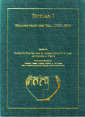

D.M. Master, J.M. Monson, E.H.E. Lass, and G.A. Pierce
Dothan I : Remains from the Tell (1953-1964)
Eisenbrauns: Winona Lake, Indiana, 2005
 |
We would like to express our thanks to the Shelby White-Leon Levy Fund for Archaeological Publication. The work of this publication fund has done wonders for Mediterranean archaeology in general, and in our case, it has been the driving force behind the publication of Tell Dothan over the last three years. This publication would not have happened anytime in the foreseeable future without the help of this fund and its generous benefactors. Additional support was provided by internal grants from the G. W. Aldeen Fund at Wheaton College, by the United Nations Development Program, and by many hours of labor donated by several generations of archaeology students at Wheaton College. When we came to Wheaton College, we were confronted by a daunting task. Almost fifty years before our arrival, Wheaton had excavated an important Palestinian tell, and yet there existed no final publication to document the excavations. As we conceived of ways to move the Wheaton Archaeology Museum forward, we knew that any plan would first have to involve the publication of prior excavations in fulfillment of our archaeological responsibilities. Fortunately, the Tell Dothan collection at Wheaton College had been cared for very well. For decades AI Hoerth (who was Professor of Archaeology at Wheaton for 29 years) and more recently his former students Kenneth Hoglund and Deborah Webber had been carefully curating this material. building a card tile of the objects. and organizing the material in the hope, that a publication might one day be possible. The first step, toward a synthesis of this material were taken by Nathaniel Heller in his 2001 MA thesis. Our work here stands on all of their shoulders and we thank them for their input and long-suffering efforts. While we were aware of the work at Wheaton, we did not realize the extent of the organizational work done by Robert Cooley until we visited Jerusalem. Dr. Free had believed in distributing material widely in order to spread the risk of the loss from any one storage facility. Unfortunately, he left no map or record of these distributions, so it was left to Robert Cooley to painstakingly track down artifacts for more than three decades. His efforts insured the survival of a coherent corpus from the excavations. This work was supported by the Dothan Publication Committee, and particular thanks are due to John Rea, Walter Kaiser, Carl Taeschner, Bonnie Hansen, and Joe Cunningham for their financial contribution to these essential tasks. In the fall of 2001 we approached the Free Family Foundation. the holders of the publication rights to this material, and they graciously agreed to let us proceed with a publication of the material on the tell as part of a two volume publication program. Our volume on the remains from the tell is Volume I and a forthcoming volume on the tombs of the Western Cemetery is to be Volume II. We would like to thank Robert Cooley and Abed Ismail for the trust that they placed in our work and the help that they gave us every step of the way. With the permission of the Free family secured and the blessing of the Free Family Foundation, we were then able to obtain permission from main repositories of Dothan objects, including the W. H. Mare Archaeological Institute at Covenant Seminary in St. Louis, Missouri. St. George's College in Jerusalem, and the Rockefeller Museum in Jerusalem. Each of these institutions kindly allowed us to inspect, photograph, and draw the objects in their collections for the purpose of this publication. Part of our publication involved the making of new acquaintances in the Dothan valley as we visited the site and ultimately conducted a brief survey in the summer of 2004. Through the kindness of Bill Broughton we were introduced to the staff of the United Nations Development Program Tim Rothermel. George Khoury and Nasser Faqih offered us every available resource and facilitated a new connection with the Dothan Valley and its hospitable residents, some of whom had warm memories of Professor Joseph Flee. Our friends from the United Nations introduced us to Hamdan Taha. Director General of the Department of Antiquities and Cultural Heritage of the Palestinian Authority, who graciously encouraged our work and was kind enough to visit the site with us in the summer of 2003. Once we began the publication in our archaeology laboratory. We quickly realized that we would need more help. We received the generous support of the administration of Wheaton College, including the Dean of the Humanities and Theological Studies, Jill Baumgartener, the Provost, Stanton Jones, and two department chairs, Paul House and Richard Schultz. In addition, our archaeology students stepped up to the challenge, digitizing the records for almost forty thousand registered pieces of pottery, scanning thousands of slides, editing texts, and tracking down ceramic parallels. In particular, the students who participated in our seminar on Tell Dothan in the fall of 2003 were able to work on focused studies of Dothan's history. Since the pottery was in several countries, we relied upon several illustrators for the plates. Our thanks go to Fadi Amira and Julia Rudman in Jerusalem, Peggy Sanders in Chicago, and Jennilyn White, Rebekah Williams. and Jon Walton in Wheaton. The publication process took us to Jerusalem in the summers of 2003 and 2004. While there, our work was facilitated by the Albright Institute for Archaeological Research and its director Sy Gitin. In addition we benefited from visits from Gabriel Barkay, Amihai Mazar, and Anna de Vincenz, who all lent words of encouragement and advice to our pottery sorting sessions. We are especially grateful to Ross Jones, the Dean of St. George's College in Jerusalem, as well as the other staff of St. George's School who offered their help and shared their facilities as we analyzed their Dothan collection. Over the years, through archaeology conferences and public presentations, members of the original Dothan excavation returned to tell us of the richness and importance of the Dothan excavations. We hope that this volume opens a window for the rest of the archaeological community to see what the original excavators have long known. This work stands as a tribute to the long hours that they logged between 1953-1964 in an effort to understand more about the history of Palestine and the ancient stories of the Dothan Valley. Finally, none of this would have been possible without the vision of Joseph Free. He was the founder of the archaeology program in which we have the good fortune of working. Through his work, his students, and his family we know him to have been an enthusiastic archaeologist and a passionate teacher. His energetic work at Tell Dothan uncovered a rich and important city that we hope can now make its long overdue contribution to the understanding of ancient Palestine and the culture of the Dothan Valley. |
| Back to Publications | Table of Contents |